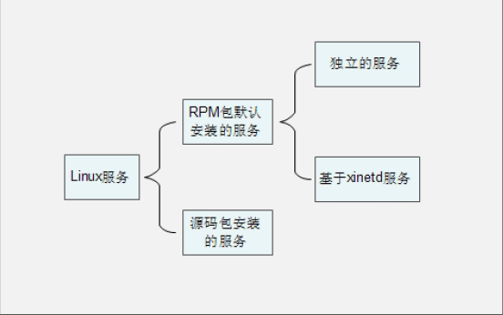

一、服务的简介与分类
1、服务的分类

RPM包默认安装的服务
这些服务是通过RPM包安装的，可以被服务管理命令识别。又分为两种子分类：
独立的服务：就是独立启动的意思，这类型的服务可以自行启动，而不用这依赖其他的管理服务。不依赖其他的管理服务，那么当客户端请求访问时，独立的服务响应请求更快速。Linux中目前大多数服务都是独立服务，比如apache服务，FTP服务，Samba服务等。
基于xinetd的服务：这种服务就不能独立启动了，而是依靠管理服务来调用这种服务。这个负责管理的服务就是xinetd服务，xinetd服务是系统的超级守护进程。xinetd服务作用就是管理不能独立启动的服务，当有客户端请求时，先请求xinetd服务，由xinetd服务去唤醒相对应的服务。当客户端请求结束后，被唤醒的服务会关闭并释放资源。这样做的好处是只需要持续启动xinetd服务，而其他基于xinetd的服务只有在需要时才启动。不会占用过多的服务器资源。但是这种服务由于在客户端请求时才会被唤醒，所以响应时间相对较慢。
源码包安装的服务
2、查询已经安装的服务和区分服务
[root@localhost ~]# chkconfig --list [服务名]
选项：
--list：列出所有RPM默认安装服务的自启动状态
二、RPM包默认安装的服务管理
1、独立服务管理
1）独立服务的启动管理
使用/etc/init.d/目录中的启动脚本启动服务
[root@localhost ~]# /etc/init.d/httpd start
使用service命令来启动独立的服务
[root@localhost ~]# service 独立服务名 start|stop|restart|...
2）独立服务的自启动管理
使用chkconfig服务自启动管理命令
[root@localhost ~]# chkconfig [--level 运行级别] [独立服务名] [on|off]
选项：
--level：设定在哪个运行级别中开机自启动（on），或是关闭自启动（off）。
修改/etc/rc.d/rc.local文件，设置服务自启动
[root@localhost ~]# vi /etc/rc.d/rc.local
#!/bin/sh
#
# This script will be executed *after* all the other init scripts.
# You can put your own initialization stuff in here if you don't
# want to do the full Sys V style init stuff.
touch /var/lock/subsys/local
#!/bin/sh
#
# This script will be executed *after* all the other init scripts.
# You can put your own initialization stuff in here if you don't
# want to do the full Sys V style init stuff.
touch /var/lock/subsys/local
使用ntsysv命令管理自启动
[root@localhost ~]# ntsysv [--level 运行级别]
选项：
--level 运行级别：可以指定设定自启动的运行级别
这个命令的操作是这样的：
上下键：在不同的服务之间移动
空格键：选定或取消移动服务的自启动。就是在服务之前是否打入“*”
tab键： 在不同的项目间切换
F1键： 显示服务的说明
2、基于xinetd服务的管理
1）基于xinetd服务的启动
以telnet服务为例，telnet服务是用来进行系统远程管理的，端口是23。注意telnet的远程管理数据在网络中是明传输的，非常不安全。所以在生产服务器上是不建议启动telnet的。在生产服务器上，远程管理使用的转文是ssh协议，ssh是加密的更加安全。
[root@localhost ~]# vi /etc/xinetd.d/telnet
#defalut:on
#descrption:The telnet server telnet sessions; it uses \
# unencrypted username/password pairs for authentication.
service telnet #服务名称为telnet
{
flags = REUSE #标志为REUSE，设定TCP/IP socket可重用
socket_type = stream #使用TCP协议数据包
wait = no #允许多个连接同时连接
user = root #启动服务的用户为root
server = /usr/sbin/in.telnetd #服务启动程序
log_on_failure += USERID #登陆失败后，记录用户的ID
disable = yes #服务不启动
}
[root@localhost ~]# vi /etc/xinetd.d/telnet
service telnet
{
...省略部分输出...
disable = no #将yes改为no
}
[root@localhost ~]# service xinetd restart
2）基于xinetd服务的启动
使用chkconfig命令管理自启动
使用ntsysv命令管理自启动
[root@localhost ~]# chkconfig 服务名 on|off
#基于xinetd的服务，没有自己的运行级别，是依靠xinetd服务的运行级别。所以不用指定--leverl选项
3、独立服务启动脚本分析
[root@localhost ~]# vi /etc/init.d/httpd
#!/bin/bash
#
#httpd Starup script for the Apache HTTP Server
#
#chkconfig: -85 15
#自启动设定 -代表自启动级别，85（S85）代表启动序号，15（K15）代表关闭序号。
#dscription: The Apache HTTP Server is an efficient and extensible \
# server implementing the current HTTP standards.
#服务描述。以上两行用于apache自启动。
#processname: httpd
#config: /etc/httpd/conf/httpd.conf
#config: /etc/sysconfig/httpd
#pidfile: /var/run/httpd/httpd.pid
#
###BEGIN INIT INFO
#Provides: httpd
#Required-Start: $local_fs $remote_fs $network $named
#Required-Stop: $local_fs #remote_fs $network
#Should-Start: discache
#Short-Description: start and stop Apache HTTP Server
#Description: The Apache HTTP Server is an extensible server
# implementing the current HTTP standards.
###END INIT INFO
#以上为注释
#Source function libary.
. /etc/rc.d/init.d/functions
#“.”其实就是source，就是调用functions文件
if [ -f /etc/sysconfig/httpd ];then
. /etc/sysconfig/httpd
fi
#判断httpd如果是文件，则调用httpd文件
#Start httpd in the C locale by fault
HTTPD_LANG=${HTTPD_LANG-"C"}
#定义变量HTTPD_LANG的值。并追加变量的值为C，即英文
#This will prevent initlog from swallowing up a pass-phrase prompt if
#mod_ssl needs a pass-phrase from the user.
INITLOG_ARGS=""
#Set HTTPD=/usr/sbin/httpd. worker in /etc/sysconfig/httpd to use a server
#with the thread-based "worker" MPM; BE WARNED that some modules may not
#work correctly with a thread-based MPM; notably PHP will refuse to start.
#Path to the apachectl script, server binary, and short-form for messages.
apachectl=/usr/sbin/apachectl
http=${HTTPD-/usr/sbin/httpd}
prog=httpd
pidfile=${PIDFILE-/var/run/httpd/httpd.pid}
lockfile=${LOCKFILE-/var/lock/subsys/httpd}
#定义一系列变量，用于后面的执行
RETVAL=0
#定义全局命令返回变量
STOP_TIMEOUT=${STOP_TIMEOUT-10}
#The semantics of these two functions differ from the way apachectl does
#things -- attempting to start while running is a failure, and shutdown
#when not running is also a failure. So we just do it the way init scripts
#are expected to behave here.
start() {
echo -n $"Starting $prog:"
LANG=$HTTPD_LANG daemon --pidfile=${pidfile} $httpd $OPTIONS
RETVAL=$?
echo
[ $RETVAL = 0 ] && touch ${lockfile}
return $RETVAL
}
#定义start函数，用于apache的启动
#如果守护进程/usr/sbin/httpd启动成功（$RETVAL = 0），就建立/var/lock/subsys/httpd文件
#(touch ${lockfile})。通过$httpd变量执行/usr/sbin/httpd命令启动apache。
#通过$pidfile变量调用apache的PID。通过变量$OPTIONS定义命令执行时的初始化环境配置
#依赖/etc/sysconfig/httpd文件
#When stopping httpd, a delay (of default 10 second) is required
#before SIGKILLing the httpd parent; this gives enough time for the
#httpd parent to SIGKILL any errant chilren.
stop(){
echo -n $"Stopping $prog:"
killproc -p ${pidfile} -d ${STOP_TIMEOUT} $httpd
REVAL=$?
echo
[ $REVAL=0 ] && ${lockfile} ${pidfile}
}
#定义stop函数，用来关闭apache服务，关闭服务之后会删除pid文件
reload() {
ehco -n $"Reloading $prog:"
if ! LANG=$HTTPD_LANG $httpd $OPTIONS -t >&/dev/null;then
REVAL=6
echo $"not reloading due to configuration syntax error"
failure $"not reloading $httpd due to configuration syntax error"
else
#Force LSB behaviour from killproc
LSB=1 killproc -p ${pidfile} $httpd -HUP
RETVAL=$?
if [ $RETVAL -ea 7 ];then
failure $"httpd shutdown"
fi
fi
echo
}
#定义reload函数，用于apache的重新加载
#通过/usr/sbin/httpd -t命令判断apache的配置文件。如果配置文件报错，则输出错误提示。如果配置正确，则重新加载apache。
#see how we were called
case "$1" in
#判断执行脚本后的第一个参数的值，$1表示执行脚本时的第一个参数
start)
start
;;
;;
#如果参数值为start，则调用start函数
stop)
stop
;;
#如果参数值为stop，则调用stop函数
status)
status -p ${pidfile} $httpd
RETVAL=$?
;;
#如果参数值为status，则执行status -p $httpd命令测试apache状态
restart)
stop
start
;;
#如果参数值为restart，则先调用stop函数，再调用start函数
condrestart|try-restart)
if status -p ${pidfile} $httpd >&/dev/null;then
stop
start
fi
;;
#如果参数值为condrestart或try-restart，则只有apache服务是已经运行时才先调用stop函数，再调用start函数，重启apache。如果apache服务没有运行，则不重启apache。
force-reload|reload)
reload
;;
#如果参数值为force-reload或reload,则调用reload函数。
graceful|help|configtest|fullstatus)
$apachectl $@
RETVAL=$?
;;
#如果参数是graceful或help或configtest或fullstatus，则执行/usr/sbin/apachectl命令，并把参数作为命令的参数传入apachectl命令。
*)
echo $"Usage: $prog{start|stop|restart|condrestart|try-restart|force-reload|status|fullstatus|graceful|help|configtest}"
RETVAL=2
#如果输出的参数不是以上任何参数，则输出错误信息
esac
exit $RETVAL
三、源码包安装的服务管理
1、源码包服务的启动管理
[root@localhost ~]# /usr/local/apache2/bin/apachectl start|stop|restart|...
#源码包服务启动管理
2、源码包服务的自启动管理
[root@localhost ~]# vi /etc/rc.d/rc.local
#修改自启动文件
#!/bin/sh
#
# This script will be executed *after* all the other init scripts.
# You can put your own initialization stuff in here if you don't
# want to do the full Sys V style init stuff.
touch /var/lock/subsys/local
#
# This script will be executed *after* all the other init scripts.
# You can put your own initialization stuff in here if you don't
# want to do the full Sys V style init stuff.
touch /var/lock/subsys/local
/usr/local/apache2/bin/apachectl start
3、让源码包服务被服务管理命令识别
如何让源码包安装的apache变为和RPM包安装的apache一样，可以被service、chkconfig、ntsysv命令识别。试验如下：
1）安装源码包的apache服务，并启动
#安装源码包的apache服务
[root@localhost ~]# /usr/local/apache2/bin/apachectl start
[root@localhost ~]# netstat -nltu | grep 80
tcp 0 0 :::80 :::* LISTEN
#启动源码包的apache，查看端口确定已经启动
2）让源码包的apache服务能被service命令管理启动
[root@localhost ~]# ln -s /usr/local/apache2/bin/apachectl /etc/init.d/apache
#service命令其实只是在/etc/init.d/目录中查找是否有服务的启动脚本，所以只需做个软链接把源码包的启动脚本链接到/etc/init.d/目录中，就能被service命令管理了。
[root@localhost ~]# service apache restart
#虽然是源码包安装的apache，但是service命令也能生效
4）让源码包的apache服务能被chkconfig命令管理自启动
[root@localhost ~]# vi /etc/init.d/apache
#修改源码包apache的启动脚本（注意此文件是软链接，所以修改的还是源码包的启动脚本）
#!/bin/bash
#
#chkconfig: 35 86 76
#指定httpd脚本可以被chkconfig命令管理
#格式是：chkconfig: 运行级别 启动顺序 关闭顺序
#这里是让apache在3和5级别能被chkconfig命令管理，启动顺序是S86，关闭顺序是K76
#（自定义顺序不要和系统中已有的启动顺序冲突）
#description: source package apache
#说明，内容随意
#以上两句话必须加入，才能被chkconfig命令识别
...省略部分输出...
[root@localhost ~]# chkconfig --add apache
#让chkconfig命令能够管理源码包安装的apache
[root@localhost ~]# chkconfig --list | grep apache
apache 0:关闭 1:关闭 2:关闭 3:启用 4:关闭 5:启用 6:关闭
#源码包安装的apache服务，能够被chkconfig命令管理
5）让ntsysv命令可以管理源码包apache
#ntsysv命令其实和chkconfig命令使用同样的管理机制，也就是说ntsysv已经可以进行源码包apache的自启动管理了。
总结：如果想让源码包服务被service命令识别并管理，只要做个软链接把启动脚本链接到/etc/init.d/目录中即可。要想让源码包服务被chkconfig命令识别，除了需要把服务启动脚本链接到/etc/init.d/目录中，还要修改这个启动脚本，在启动脚本的开头加入：
#chkconfig: 运行级别 启动顺序 关闭
#description: 说明
然后需要使用“chkconfig --add 服务名”的方式把服务加入chkconfig命令管理中
命令格式如下：
[root@localhost ~]# chkconfig [选项] [服务名]
选项：
--add: 把服务加入chkconfig命令管理
--del: 把服务从chkconfig命令的管理中删除
例：
[root@localhost ~]# chkconfig --del httpd
#把apache服务从chkconfig命令的管理中删除
四、总结服务管理

五、Linux中常见服务的作用
| 服务名称 | 功 能 简 介 | 建议 |
| acpid | 电源管理接口。如果是笔记本用户建议开启，可以监听内核层的相关电源事件。 | 开启 |
| anacron | 系统的定时任务程序。cron的一个子系统，如果定时任务错过了执行，可以通过anacron继续唤醒执行。 | 关闭 |
| alsasound | Alsa声卡驱动。如果使用alsa声卡，开启 | 关闭 |
| apmd | 电源管理模块。如果支持acpid，就不需要apmd，可以关闭 | 关闭 |
| atd | 指定系统在特定时间执行某个任务，只能执行一次。如果需要则开启，但我们一般使用crond来进行循环定时任务。 | 关闭 |
| auditd | 审核子系统。如果开启了此服务，SELinux的审核信息写入/var/log/audit/audit.log文件，如果不开启，审核信息会记录在syslog中 | 开启 |
| autofs | 让服务器可以自动挂载网络中的其他服务器的共享数据，一般用来自动挂载NFS服务。如果没有NFS服务建议关闭。 | 关闭 |
| avahi-daemon | Avahi是zeroconf协议的实现。它可以在没有DNS服务的局域网里发现基于zeroconf协议的设备和服务。除非有兼容设备或使用zeroconf协议，否则关闭。 | 关闭 |
| bluetooth | 蓝牙设备支持。一般不会在服务器上启用蓝牙设备，关闭它 | 关闭 |
| capi | 仅对使用ISND设备的用户有用 | 关闭 |
| chargen-dgram | 使用UDP协议的chargen server。主要功能是提供类似远程打字功能。 | 关闭 |
| chargen-stream | 同上。 | 关闭 |
| cpuspeed | 可以用来调整CPU的速率。当闲置时可以自动降低CPU频率来节省电量。 | 开启 |
| crond | 系统的定时任务，一般的Linux服务器都需要定时任务帮助系统维护。建议开启。 | 开启 |
| cvs | 一个版本控制系统 | 关闭 |
| daytime-dgram | daytime使用TCP协议的Daytime守护进程，该协议为客户机实现从远程服务器获取日期和时间功能。 | 关闭 |
| daytime-stream | 同上 | 关闭 |
| dovecot | 邮件服务中POP3/IAMP服务的守护进程。主要用来接收信件，如果启动了邮件服务则开启，否则关闭 | 关闭 |
| echo-dgram | 服务器回显客户服务的进程。 | 关闭 |
| echo-stream | 同上 | 关闭 |
| firstboot | 系统安装完后，有个欢迎界面，需要对进程初始设定。就是这个进程的作用。既然不是第一次启动，关闭它 | 关闭 |
| gpm | 在字符终端（tty1-tty6） 中可以使用鼠标复制和粘贴。就是这个服务的功能。 | 开启 |
| haldaemon | 检测和支持USB设备。如果是服务器可以关闭，个人机建议开启 | 关闭 |
| hidd | 蓝牙鼠标、键盘等蓝牙设备检测。必须启动bluetooth服务。 | 关闭 |
| hplip | HP打印机支持，如果没有HP打印机关闭。 | 关闭 |
| httpd | apache服务的守护进程。如果需要启动apache，就开启。 | 开启 |
| ip6tables | IPv6的防火墙，目前IPv6协议没有使用，可以关闭 | 关闭 |
| iptables | 防火墙功能，Linux中防火墙是内核支持功能。这是服务器的主要防护手段，必须开启 | 开启 |
| irda | IrDA提供红外线设备（笔记本，PDA's，手机，计算器等 ）间的通讯支持。关闭 | 关闭 |
| irqbalance | 支持多核处理器，让CPU可以自动分配系统中断（IRQ），提高系统性能。目前服务器多是多核CPU，请开启。 | 开启 |
| isdn | 使用ISDN设备连接网络。目前主流的联网方式是光纤接入和ADSL，ISDN已经非常少见，请关闭 | 关闭 |
| kudzu | 该服务可以在开机时进行硬件检测，并会调用相关的设置软件。建议关闭，仅在需要时开启 | 关闭 |
| lvm2-monitor | 该服务可以让系统支持LVM逻辑卷组，如果分区采用的是LVM方式，那么应该开启，建议开启 | 开启 |
| mcstrans | SELinux的支持服务。建议启动 | 开启 |
| mdmonitor | 该服务用来监测Software RAID或LVM的信息。不是必须服务，请关闭。 | 关闭 |
| mdmpd | 该服务用来监测Multi-Path设备。不是必须服务。 | 关闭 |
| messagebus | 这是Linux的IPC（Interprocess Communication，进程间通讯）服务，用来在各个软件中交换信息。个人建议关闭。 | 关闭 |
| microcode_ctl | Intel系统的CPU可以通过这个服务支持额外的微指令集。 | 关闭 |
| mysqld | mysql数据库服务器。如果需要则开启，否则关闭 | 关闭 |
| named | DNS服务的守护进程，用来进行域名解析。如果是DNS服务器则开启，否则关闭 | 关闭 |
| netfs | 该服务用于在系统启动时自动挂载网络中的共享文件空间，比如：NFS，Samba等。需要就开启，否则关闭 | 关闭 |
| network | 提供网络设置功能。通过这个服务来管理网络，所以开启 | 开启 |
| nfs | NFS（Network File System）服务，Linux与Linux之间的文件共享服务。需要就开启，否则关闭。 | 关闭 |
| nfslock | 在Linux中如果使用了NFS服务，为了避免同一个文件被不同的用户同时编辑，所以有这个锁服务。有NFS时开启，否则关闭。 | 关闭 |
| ntpd | 该服务可以通过互联网自动更新时间，使系统时间永远都准确。需要则开启，但不是必须服务 | 关闭 |
| pcscd | 智能检测服务，可以关闭 | 关闭 |
| portmap | 用在远程调用（RPC）的服务，如果没有任何RPC时，可以关闭。主要是NFS和NIS服务需要。 | 关闭 |
| psacct | 该守护进程支持几个监控进程活动的工具 | 关闭 |
| rdisc | 客户端ICMP路由协议 | 关闭 |
| readahead_early | 在系统开机的时候，先将某些进程加载入内存整理，可以加快一点启动速度。 | 关闭 |
| readahead_later | 同上 | 关闭 |
| restorecond | 用于给SELinux监测和重新加载正确的文件。如果开启SELinux则需要开启。 | 关闭 |
| rpcgssd | 与NFS有关的客户端功能。如果没有NFS则关闭 | 关闭 |
| rpcidmapd | 同上 | 关闭 |
| rsync | 远程数据备份守护进程。 | 关闭 |
| sendmail | sendmail邮件服务的守护进程。如果有邮件服务就开启，否则关闭 | 关闭 |
| setroubleshoot | 该服务用于将SELinux相关信息记录在日志/var/log/message中。建议开启 | 开启 |
| smartd | 该服务用于自动检测硬盘状态。建议开启 | 开启 |
| smb | 网络服务samba的守护进程。可以让Linux和windows之间共享数据。如果需要则开启 | 关闭 |
| squid | 代理服务的守护进程。如果需要则开启，否则关闭 | 关闭 |
| sshd | ssh加密远程登陆管理的服务。服务器的远程管理必须使用此服务，必须开启 | 开启 |
| syslog | 日志守护进程 | 开启 |
| vsftpd | vsftp服务的守护进程。如果需要FTP服务开启，否则关闭 | 关闭 |
| xfs | 这个是XWindow的字体守护进程。为图形界面提供字体服务，如果不启动图形界面，就不用开启 | 关闭 |
| xinetd | 超级守护进程。如果有依赖xinetd的服务就必须开启。 | 开启 |
| ypbind | 为NIS（网络信息系统）客户机激活ypbind服务进程 | 关闭 |
| yum-updatesd | yum的在线升级服务 | 关闭 |